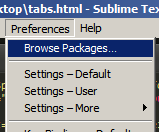
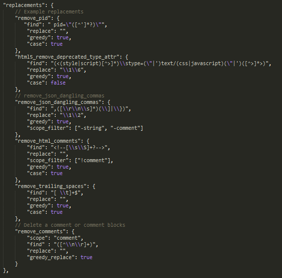

SD Workflow with Sublime Text 2
Installation
- Windows - you can also download the portable version here
- Windows 64 bit
- MAC OSX
Click here for more details
Basic Features
- Multiple Cursors
- Vintage Mode
-
Command Palette
CTRL+SHIFT+P -
Jump to matching bracket
CTRL+M -
Select word
CTRL+D- (repeat to select the next occurence of the selected word) -
Toggle Comment
CTRL+/ - Search with Regular Expressions
Plugins
- Sublime Package Control
-
A full-featured package manager that helps discovering, installing, updating and removing packages for Sublime Text 2. It features an automatic upgrader and supports GitHub, BitBucket and a full channel/repository system.
- Tag
-
"Tag" plugin is a collection of packages about tags, mixed together in an effort to provide a single package with utilities to work with tags. Default Shortcut -
CTRL+ALT+F - BracketHighlighter
-
Bracket Highlighter matches a variety of brackets such as: [], (), {}, "", '',
, and even custom brackets. - SublimeLinter
-
SublimeLinter is a plugin that supports "lint" programs (known as "linters"). SublimeLinter highlights lines of code the linter deems to contain (potential) errors. It also supports highlighting special annotations (for example: TODO) so that they can be quickly located. Default Shortcut -
CTRL+ALT+L - Emmet
-
Emmet (previously known as Zen Coding) is a web-developer’s toolkit that can greatly improve HTML & CSS workflow
Some actions
- Go to Matching Pair -
CTRL+ALT+J - Match Tag Pair Inward -
SHIFT+CTRL+0 -
Match Tag Pair Outward -
CTRL+,
Complete list here
- Go to Matching Pair -
- RegReplace
-
Reg Replace is a plugin for Sublime Text 2 that allows the creating of commands consisting of sequences of find and replace instructions.
- Install RegReplace
-
Go to Preferences > Click Browser Packages.
 - Find and Open RegReplace Folder.
- Open and edit reg_replace.sublime-settings.
-
Add this code inside the "replacements" bracket.
"remove_pid": { "find": " pid=\"([^']*?)\"", "replace": "", "greedy": true, "case": true }It should look like this
 - Save changes.
- Go to Preferences > Click "Key Bindings - User". Sublime will open a new tab.
-
Add this code inside the square brackets
{ "keys": ["ctrl+shift+r"], "command": "reg_replace", "args": {"replacements": ["remove_pid"]} } - Save.
Adding DePid Function in Sublime Text 2
Snippets